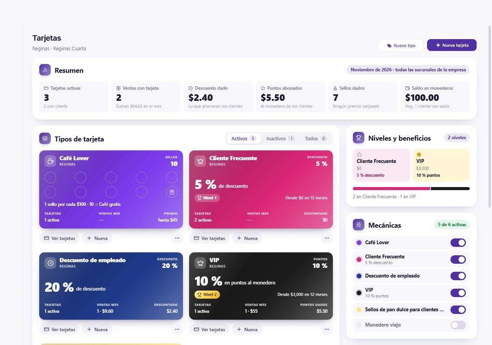
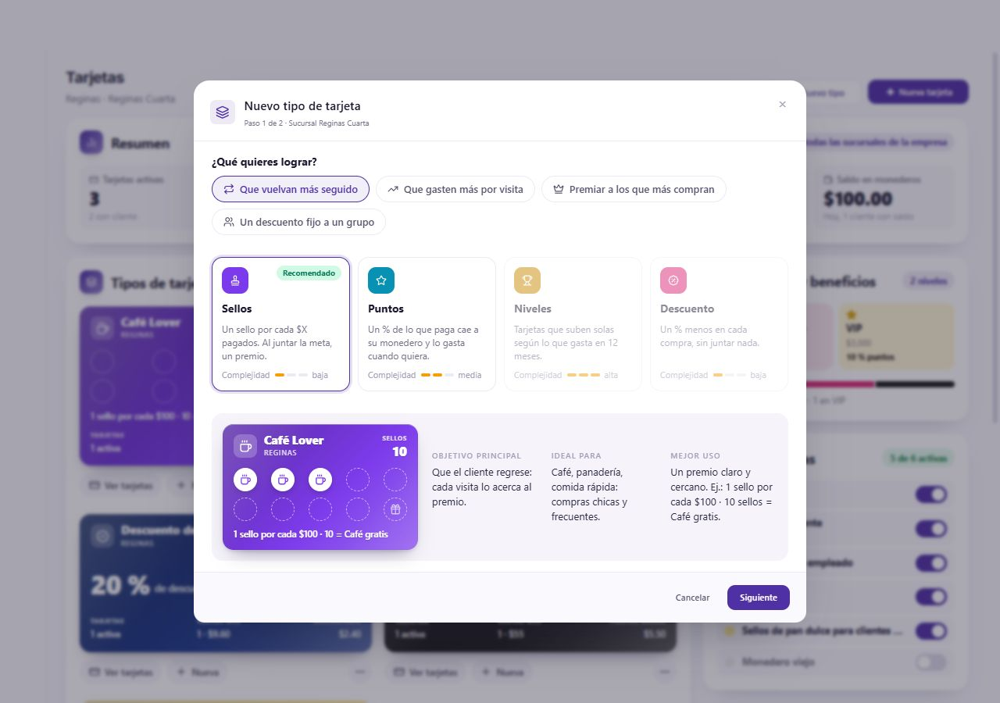
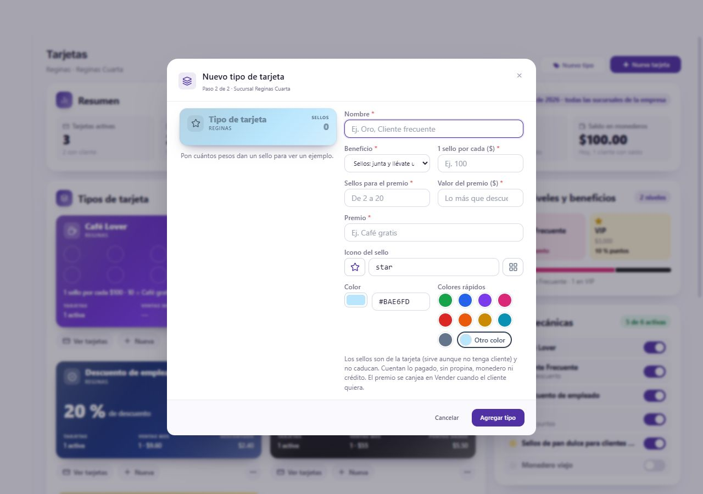
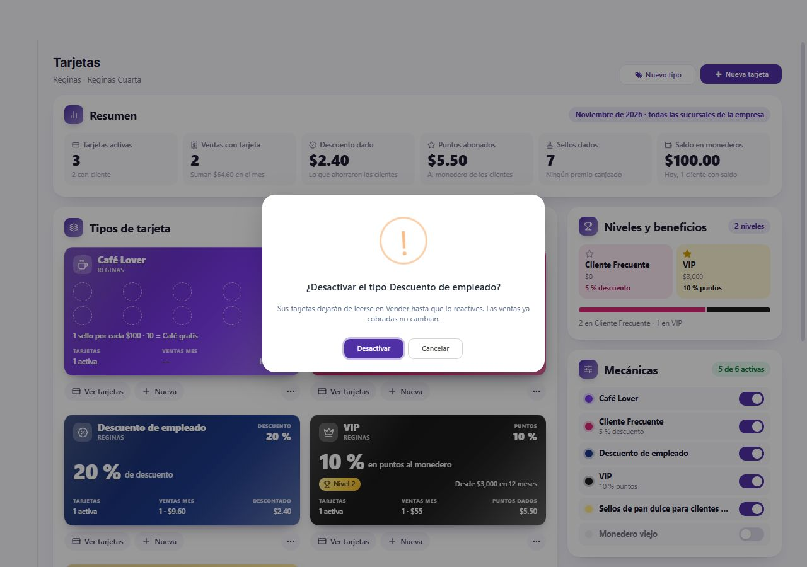
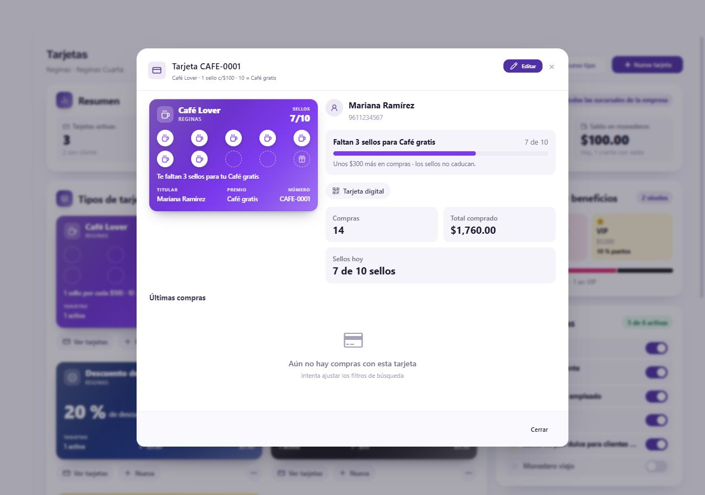
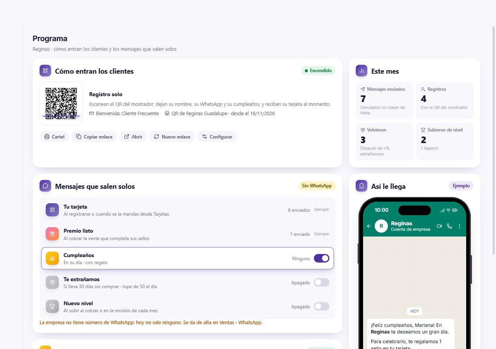
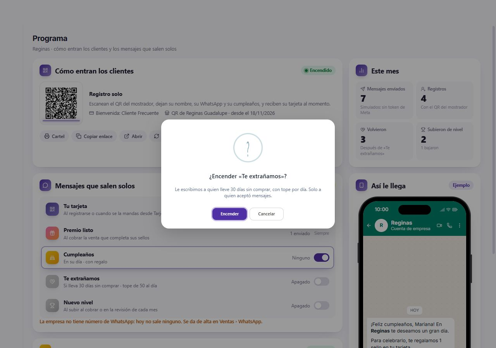
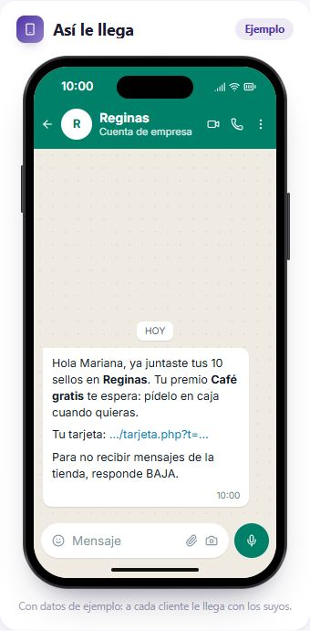
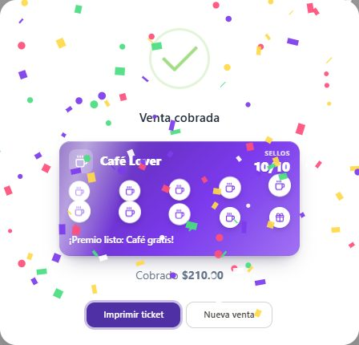
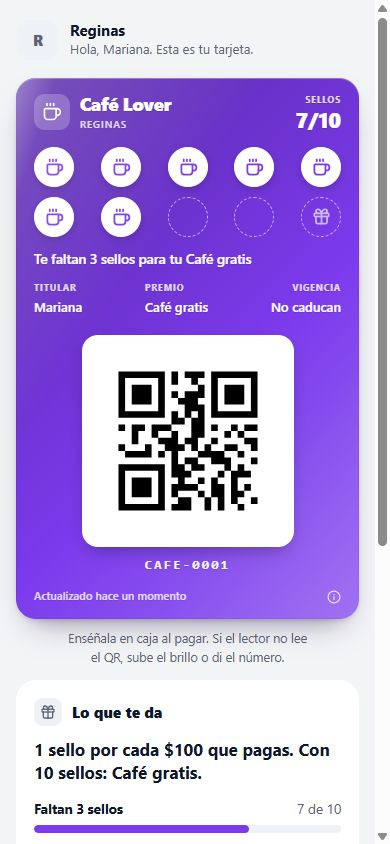

Huubie · Lealtad · Manual de uso
Tarjetas que premian a quien vuelve: descuento, puntos al monedero, sellos con premio o niveles. Este manual explica cada pantalla, qué pasa al tocar cada botón y qué hacer cuando algo no sale.
Lealtad tiene dos pantallas en el menú y una parte en caja. Las tarjetas valen en todas las sucursales de la empresa.
| Dónde | Para qué | Quién la usa |
|---|---|---|
| Lealtad › Tarjetas | Crear los tipos de tarjeta, activarlos o desactivarlos, dar de alta plásticos y ver la ficha de cada tarjeta. | Dueño o encargado |
| Lealtad › Programa | Cómo se registran los clientes solos (QR del mostrador) y los mensajes de WhatsApp que salen solos. | Dueño o encargado |
| Ventas › Vender | Leer la tarjeta al cobrar: aplica el descuento, abona puntos, suma sellos y canjea premios. | Cajeros |
| Tarjeta digital | La página que abre el cliente en su teléfono: su QR, sus sellos y lo que le da su tarjeta. | El cliente |
| Palabra | Qué significa |
|---|---|
| Tipo de tarjeta | La regla: qué da (descuento, puntos o sellos), su color y su nombre. Ej.: «Café Lover», «VIP». |
| Tarjeta | Una tarjeta concreta de un tipo, con su número (plástico o digital). Puede tener un cliente dueño. |
| Descuento | Un % menos en cada compra. Esa venta ya no admite otro descuento. |
| Puntos | Un % de lo que paga cae a su monedero. Lo gasta pagando con «Monedero». |
| Sellos | Un sello por cada $X pagados. Al juntar la meta, un premio. Los sellos no caducan. |
| Nivel | Un tipo con «gasto mínimo en 12 meses». La tarjeta sube sola al tipo que le toca según lo que gasta. |
El orden para arrancar un programa desde cero:
Si usas plásticos: Tarjetas › Nueva tarjeta da de alta cada número. Las tarjetas digitales (registro con QR) se crean solas.
Un solo tablero: resumen arriba, tipos de tarjeta a la izquierda, niveles y mecánicas a la derecha, y la lista de tarjetas abajo.

Seis cifras del mes en curso, sumando todas las sucursales. Los números cuentan desde cero la primera vez que abres la página.
| Cifra | Qué cuenta |
|---|---|
| Tarjetas activas | Las que hoy se pueden leer en caja, y cuántas tienen cliente. |
| Ventas con tarjeta | Ventas del mes con tarjeta y cuánto suman. |
| Descuento dado | Lo que ahorraron los clientes por su tarjeta en el mes. |
| Puntos abonados | Lo que cayó a los monederos en el mes. |
| Sellos dados | Sellos sumados en el mes y premios canjeados. |
| Saldo en monederos | Lo que hoy tienen los clientes por gastar. |
Paso 1, el objetivo. Elige qué quieres lograr y el sistema marca la estructura recomendada. Puedes elegir otra.
| Estructura | Cómo funciona | Ideal para | Ejemplo |
|---|---|---|---|
| Sellos | Un sello por cada $X. Al juntar la meta, un premio. | Café, panadería, comida rápida | 1 sello por cada $100 · 10 sellos = Café gratis |
| Puntos | Un % de lo que paga cae a su monedero. | Tickets medianos y variados | 5 %: una compra de $200 deja $10 |
| Niveles | La tarjeta sube sola según lo que gasta en 12 meses. | Clientes fieles que gastan distinto | Frecuente 5 % desde $0 · VIP 10 % desde $3,000 |
| Descuento | Un % menos en cada compra, sin juntar nada. | Empleados, convenios, socios | Descuento de empleado 20 % |
Paso 2, los datos. Nombre, beneficio, color e icono. La tarjeta de la izquierda se dibuja mientras escribes.


Un tipo da descuento o puntos, nunca los dos. Para niveles: crea 2 o 3 tipos y pon a cada uno su «Gasto mínimo en 12 meses».
La escalera de niveles: cada escalón es un tipo con gasto mínimo, de menor a mayor. La barra de colores muestra cuántas tarjetas hay en cada nivel. Con menos de 2 niveles aparece Crear un nivel, que abre el paso 1 con «Premiar a los que más compran» ya elegido.
Un interruptor por tipo. Apagarlo es lo mismo que Desactivar: pide confirmar y sus tarjetas dejan de leerse en Vender hasta que lo reactives. Las ventas ya cobradas no cambian.


Cómo entran los clientes y los mensajes que salen solos. Lo que se configura aquí aplica a toda la empresa.

El cliente escanea el QR del mostrador y llena su nombre, su WhatsApp y, si quiere, su cumpleaños. Marca si acepta mensajes. Recibe su tarjeta digital al momento.
| Botón | Qué hace |
|---|---|
| Cartel | Imprime el cartel con el QR para el mostrador. |
| Copiar enlace / Abrir | El enlace del registro, para redes o para probarlo. |
| Nuevo enlace | Pide confirmar y crea un QR nuevo para esta sucursal. El cartel ya impreso deja de abrir: hay que imprimir el nuevo. |
| Configurar | Encender o apagar el registro y elegir la tarjeta de bienvenida. Apagado, el QR dice «Pide tu tarjeta en caja». |
Mensajes enviados, registros con el QR, clientes que volvieron después de «Te extrañamos» y tarjetas que subieron (o bajaron) de nivel.
| Mensaje | Cuándo sale | Interruptor |
|---|---|---|
| Tu tarjeta | Al registrarse con el QR o cuando se la mandas desde la ficha. | Siempre |
| Premio listo | Al cobrar la venta que completa sus sellos. | Siempre |
| Cumpleaños | En su día, una vez al año. Con regalo: sellos o dinero al monedero; las de descuento solo reciben la felicitación. | Sí |
| Te extrañamos | Si lleva X días sin comprar (de 7 a 365), con tope de envíos por día. Le recuerda sus sellos, su monedero o su descuento. | Sí |
| Nuevo nivel | Al subir al cobrar, o en la revisión de cada mes (sube y baja). | Sí |


Horario. Lo automático sale en el horario del WhatsApp de la tienda (Ventas › WhatsApp; sin horario guardado, de 10:00 a 19:00). Una tarea revisa cada hora. Los botones solo lo adelantan. Solo les llega a quienes aceptaron mensajes; quien responde BAJA deja de recibirlos.

Una tarjeta inactiva, o de un tipo inactivo, no se lee: Vender avisa «Tarjeta inactiva». Se reactiva en Tarjetas (ficha › Editar, o Mecánicas).

Se asignan por rol en Accesos › Roles y Permisos.
| Sección | Permiso | Qué deja hacer |
|---|---|---|
| Tarjetas | Ver | Entrar al tablero y abrir fichas. |
| Tarjetas | Crear | Nuevo tipo, Nueva tarjeta. |
| Tarjetas | Editar | Editar tipos y tarjetas, Mecánicas, Activar / Desactivar. |
| Programa | Ver | Entrar, ver los mensajes y las listas. La ficha se abre solo para leer. |
| Programa | Editar | Interruptores, Configurar y los botones que adelantan envíos. |
Al tocar Lealtad en el menú, entra a Tarjetas; si el rol solo tiene Programa, entra a Programa.
| Lo que pasa | Por qué | Qué hacer |
|---|---|---|
| Etiqueta «Sin WhatsApp» y no sale ningún mensaje | La empresa no tiene número de WhatsApp dado de alta. | Darlo de alta en Ventas › WhatsApp. |
| La tarjeta no se lee en caja | La tarjeta o su tipo están inactivos. | Ficha › Editar, o encender su tipo en Mecánicas. |
| Las tarjetas no cambian de nivel | Nuevo nivel está apagado, o hay menos de 2 tipos con gasto mínimo. | Crear un nivel en Tarjetas y encender «Nuevo nivel» en Programa. |
| A un cliente no le llegan mensajes | No aceptó mensajes al registrarse, respondió BAJA o es fuera de horario. | Revisar su ficha; esperar al horario de la tienda. |
| No se felicitó un cumpleaños | Falta la fecha, o ya se felicitó este año. | Ficha › Cumpleaños › Cambiar. |
| El QR del mostrador se compartió donde no debía | Cualquiera con el enlace se puede registrar. | Programa › Nuevo enlace e imprimir el cartel otra vez. |
| «Te extrañamos» rechaza los días | Solo acepta de 7 a 365 días. | Poner un número en ese rango. |
Capturas tomadas el 18/11/2026 de las pantallas reales con datos de ejemplo (sin clientes reales). Diseño y plan: propuesta-diseno.html · crecimiento: plan-crecimiento.html.